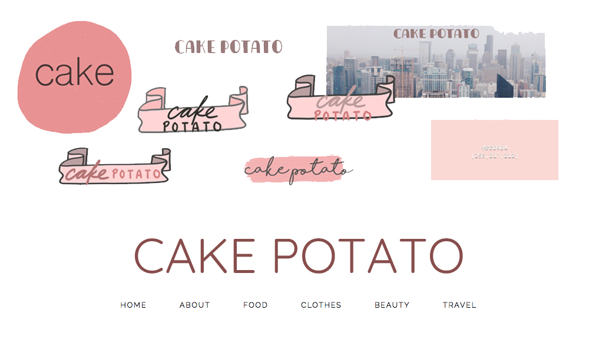

I started blogging and taking photos when I was 13. I've always had a blog since then, but it wasn't until 2015 that I decided to take my hobby more seriously and create a Blogspot account. I tinkered around with the default Blogspot theme, and from there I learned some HTML and CSS. By the beginning of 2016, I had created my own theme to work with, but it wouldn't be until the end of that same year that I'd decide to re-brand and cater more to my audience.
As I blogged on my new platform, I discovered that I tended to post about a mixture of my lifestyle, makeup, and inspiration tips. Some posts would be lengthy or photo-heavy, and it was difficult to find particular posts or scroll through the first page. The theme needed to be reorganized. Overall, I wanted to
1. Establish an identity for my blog that would reflect who I am
2. Encourage my audience to explore different topics and posts on my blog.
Most of my readers at this time were my friends, and they were mainly interested in the photography that I featured. They enjoyed looking through the photos and felt that the particular photography style was an integral part of the design. Additionally, a third of my viewers were male, and after asking them about the particular posts they read, they expressed disinterest in posts about makeup or fashion. They tended to exclusively read the posts about my tips or lifestyle.
The first thing I wanted to fix was my header and logo. My second blog theme relied on a ribbon and novelty font to give the header a playful feeling. But for the third iteration of my theme, I used a paint smear and script font to convey the femininity and elegance of the topics I posted. Still, I didn't want to restrain my writing to these subjects. So several months later, I would chage this logo once again to a plainer sans-serif font that would suit any blog post and topic.
To encourage exploration, I found a slideshow/slider script online, and I implemented this into my header to show my most recent posts. I formatted it to cover the full width of the screen and match the theme
For the posts, I enlarged each post's photos and replaced the post footer with social media icons for easy sharing. When you click on each post to read more, there are post recommendations at the bottom of the whole text, suggesting previous posts based on tag similarities.
On the sidebar, I expanded all the widgets to give them room to breathe, and I added links to additional topics that my readers may be interested in. Along with this, I added a contact button and a subscription box.
My first two themes didn't have footers, but when I decided to implement one in Cake Potato 3.0, I stayed true to being a photography blog and added an Instagram widget that displayed my most recent posts in a row.